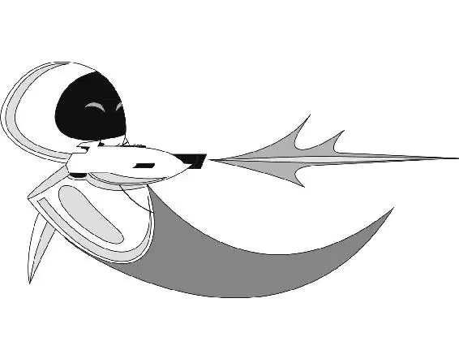

在瓦力和伊芙都被放回了运输器之后，船长留在舰桥上快速浏览着手册。“……内部陀螺仪会稳定下来。”他读道，他对太空旅行的实际运行方式产生了兴趣。
他看了看自己的手，注意到了瓦力和他握手时留下的肮脏印记。他伸出手想要擦去它，但停顿了一下，然后把手上的灰尘留了一点样品放在操纵台上。几秒钟后，灰尘悬浮在一道光芒中。
全息影像屏幕上显示出灰尘的图片，电脑合成语音宣布道：“分析：土壤，污垢，或者陆地。”
船长很好奇。他的视线飘向搁板上的一个全息影像地球仪。他告诉飞船的电脑：“解释一下‘陆地’。”
“陆地。”它一边回答，一边在屏幕上显示出美丽的森林和起伏的青山。“和天空或者大海截然不同的地球表面。”
“解释一下‘大海’。”船长说道，他对这些着迷了。
冒着白色泡沫的蓝色海浪突然出现在他的屏幕上。船长被深深吸引了。在瓦力不屈不挠地追求伊芙、寻找真爱的过程中，他正在慢慢影响他身边的人。就连船长都对一些事物表现出了兴趣。和玛丽一样，他注意到了一个全新的世界。他正享受着参与数字体验之外的真实生活。
与此同时，瓦力和伊芙正被载着穿梭在交通隧道里。瓦力试图吸引伊芙的目光，但是她拒绝看他。
瓦力和伊芙被带到飞船巨大的维修间，那里一片混乱。被能量带捆住的运转失常的机器人在大声聊天，行动失常。这些机器人没有意识到他们出了故障，都竭尽全力想要继续执行他们的指令，场面混乱不堪。瓦力看见有一个过于焦虑的按摩机器人将一个碰撞试验用的假人撕成碎片。在一个角落里，一个疯狂的除颤机器人正疯狂地挥舞着他的除颤板攻击所有他够得到的东西。
一位护工将一个表示“故障”的红色装置锁在了伊芙的头上。这些固定的装置使机器人很难逃离维修间。护工们拿着一个这种装置朝瓦力走去，但他闪身躲开，并在他们给他戴上跟踪器前逃掉了。他的目标是逃离并拯救伊芙。
然后……他被一个有故障的美容机器人抓住，那个机器人往他脸上拍化妆品。她举起一块镜子叫道：“你看上去真帅！”
瓦力这会儿完全晕头转向了，最后被一位护工的机械臂箍住。这名机器人将他牢靠地固定在了墙边。
瓦力被固定的地方一边是一个有故障的油漆工机器人，他在到处乱喷涂料，另一边则是一个坏了的真空吸尘机器人，他则对着瓦力的脸一直打喷嚏乱喷灰尘。被固定在这儿真是太糟糕了。
瓦力转动脑袋越过他的两位新伙伴向四处张望，他看到护工们把伊芙带去检查了。他能够透过诊断室的磨砂玻璃看见她的轮廓。
瓦力听见维修间的某处传来一个故障机器人的哀嚎。他确信那是伊芙。他确定他们正在伤害她！
瓦力的电路中涌过一股强大的电流。他迫切地想要去营救她，他用双眼之间的激光束切断了束缚获得自由。他摔倒在地，正巧压到了他的“播放”按钮。那首《你好，多莉！》的歌曲早前吵醒了船长，现在又在整个维修间里刺耳地响起。所有残次品机器人都呆住了。他们都转向瓦力，看着他撞破玻璃门，抓住技师机器人刚卸下来的伊芙的爆破枪手臂，他们都惊呆了。
瓦力在颤抖，但是他向护工们传递的信号很明确：放开她，否则后果自负！
护工们扑向瓦力，他一时惊慌失措，操作失误，发射了伊芙的爆破枪。幸运的是，他是反过来握住爆破枪的。枪打偏了，将维修间的控制面板炸成了冒烟的碎片。
捆着残次品机器人的蓝色能量带立刻消失了。颤抖着的残次品机器人都被释放了！他们瞪眼呆了一会儿，然后欣喜若狂地欢呼起来。
伊芙瞪着瓦力。他意识到她一点儿都没有受到伤害。但现在她肯定生气了。
“瓦力！”她厉声说道。而与此同时，一群兴奋的残次品机器人正朝他冲来，他们将瓦力举到肩头，将他们的英雄扛出维修间。伊芙大吃一惊，跟着他们，而此时警报声开始响彻整艘飞船。
逃跑的机器人蜂拥穿过一间间大厅。打伞机器人胡乱地打开并合上伞，油漆工机器人朝着各个方向猛甩涂料。瓦力无助地在这堆人的肩上颠簸，手中仍抓着伊芙的爆破枪手臂。
一行乘务员机器人出现了，堵住了残次品机器人的去路。
“停下！”一个乘务员机器人厉声喝道。
瓦力畏缩了。一个小机器人走上前去，将他的英雄瓦力向乘务员机器人推得更近。
残次品机器人在不安地等待着乘务员机器人的下一步动作，突然他们看见伊芙从他们头上飞过。她一个俯冲抓住她的爆破枪手臂，然后大声喊道：“瓦力！”
乘务员机器人拍了张他们的照片，“功理”号上的每一个屏幕上都闪现着瓦力和伊芙挥舞着她那支危险的爆破枪的影像。
“小心！”飞船的电脑宣布道。“出现异常的机器人！出现异常的机器人！”
现在他们真的碰到麻烦了。瓦力和伊芙看上去就像罪犯！
乘务员机器人正准备用一道悬浮光束将瓦力锁住时，伊芙一把抓住他的胳膊提起了他。她将他带到他们头顶上的高处。
伊芙带着瓦力飞越一间间拥挤的大厅时，残次品机器人拦住了乘务员机器人。服务机器人认出瓦力和伊芙就是出现在他们屏幕上携带爆破枪手臂的那两人时，伊芙听到了他们发出的尖叫声。伊芙在寻找躲藏的地方。
她将瓦力推进一部电梯。电梯下降时，针对他们的通缉令显现在了电梯屏幕上。“小心！出现异常的机器人！”电梯扬声器发出了刺耳的声音。
“伊——娃！”瓦力兴奋地指着屏幕上他们两人的照片说道。他觉得他们有点像他最喜欢的那部电影中的浪漫情侣。但是伊芙意识到他们看上去像亡命之徒。她将手臂装了回去，然后开枪把屏幕炸成碎片。
